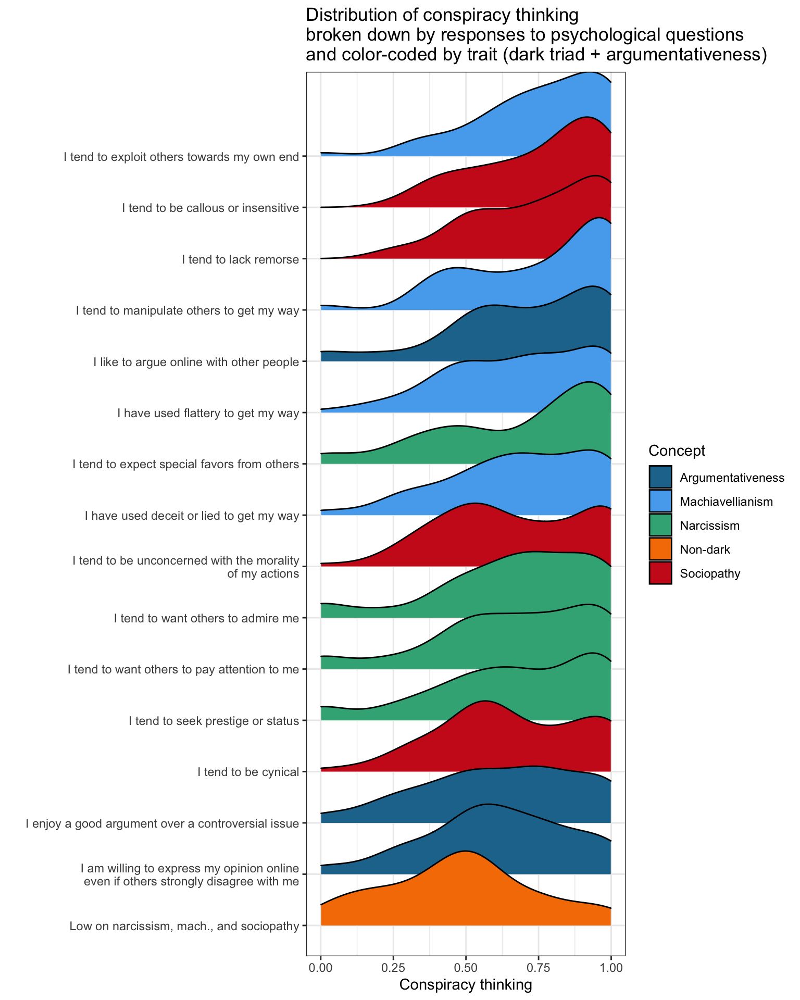

Code
library(tidyverse)
source("data/ajps2021/0_ajps_recode.R")This chapter demonstrates how to build a polished, information-dense visualization using ggplot2’s layered grammar of graphics. We’ll create a ridgeline plot that reveals the relationship between psychological traits and conspiracy thinking.
library(tidyverse)
source("data/ajps2021/0_ajps_recode.R")The data comes from a study on conspiracy beliefs, containing survey responses where participants’ psychological traits (incl. the “dark triad”—narcissism, Machiavellianism, and sociopathy—plus argumentativeness) can be estimated on the basis of questions that participants answered about themselves.
We begin by selecting survey items that measure psychological traits. Each item asks respondents to rate their agreement with a statement on a scale:
x <- c("argue1", "argue2", "argue3", "manip1", "manip2", "manip3", "manip4",
"attent1", "attent2", "attent3", "attent4",
"insens1","insens2","insens3","insens4")
#d1$nondark <- ifelse(d1$insens3 <=2 & d1$manip4 <=2 & d1$insens1<=2, 1,0)
d1$nondark <- ifelse(d1$manipulate2 <=.2 & d1$sociopathy2 <= .2 & d1$attend2 <=.2, 1,0)We also create a “nondark” indicator that flags respondents who score low on multiple dark triad dimensions, giving us a baseline comparison group.
Ridgeline plots (also called “joy plots”) stack multiple density distributions vertically, making it easy to compare distributions across groups. Here, each ridge represents respondents who agreed with a particular psychological statement, and the x-axis shows their distribution of conspiracy thinking scores.
This visualization works well because it:

pivot_longer()The most important step in making this visualization work is reshaping the data from wide to long format. In the original dataset, each psychological item is its own column. But ggplot2 works best when we have one observation per row, with a column indicating which variable we’re looking at.
d1 %>% select(consp_Index2,
nondark,
all_of(x)) %>%
pivot_longer(cols = -consp_Index2)# A tibble: 32,000 x 3
consp_Index2 name value
<dbl> <chr> <dbl+lbl>
1 0.938 nondark 0
2 0.938 argue1 3 [Neither]
3 0.938 argue2 4 [Agree]
4 0.938 argue3 4 [Agree]
5 0.938 manip1 5 [Strongly agree]
6 0.938 manip2 5 [Strongly agree]
7 0.938 manip3 5 [Strongly agree]
8 0.938 manip4 5 [Strongly agree]
9 0.938 attent1 4 [Agree]
10 0.938 attent2 3 [Neither]
# i 31,990 more rowspivot_longer() transforms our data so that:
name column contains the variable name (e.g., “argue1”, “manip2”)value column contains their response to that itemThis “tidy” structure is what allows us to facet or group by the survey item—ggplot can now treat each item as a separate category on the y-axis.
The full pipeline combines several ggplot techniques to create a polished chart:
d1 %>% select(consp_Index2,
nondark,
all_of(x)) %>%
pivot_longer(cols = -consp_Index2) %>%
mutate(name2 = case_when(
name == "argue1" ~ "I like to argue online with other people",
name == "argue2" ~ "I enjoy a good argument over a controversial issue",
name == "argue3" ~ "I am willing to express my opinion online\neven if others strongly disagree with me",
name == "manip1" ~ "I tend to manipulate others to get my way",
name == "manip2" ~ "I have used deceit or lied to get my way",
name == "manip3" ~ "I have used flattery to get my way",
name == "manip4" ~ "I tend to exploit others towards my own end",
name == "attent1" ~ "I tend to want others to admire me",
name == "attent2" ~ "I tend to want others to pay attention to me",
name == "attent3" ~ "I tend to seek prestige or status",
name == "attent4" ~ "I tend to expect special favors from others",
name == "insens1" ~ "I tend to lack remorse",
name == "insens2" ~ "I tend to be unconcerned with the morality\nof my actions",
name == "insens3" ~ "I tend to be callous or insensitive",
name == "insens4" ~ "I tend to be cynical",
name == "nondark" ~ "Low on narcissism, mach., and sociopathy"
),
concept = case_when(
name %in% c("argue1","argue2","argue3") ~ "Argumentativeness",
name %in% c("manip1", "manip2", "manip3", "manip4") ~ "Machiavellianism",
name %in% c("attent1", "attent2", "attent3", "attent4") ~ "Narcissism",
name %in% c("insens1","insens2","insens3","insens4") ~ "Sociopathy",
name %in% c("nondark") ~ "Non-dark"
)) %>%
filter(!is.na(value) & !is.na(consp_Index2)) %>%
mutate(agree = ifelse(value>=5,1,0)) %>%
group_by(name) %>% mutate(avg_agree = mean(agree)) %>%
group_by(name,agree) %>% mutate(avg_cons = mean(consp_Index2)) %>%
ungroup() %>%
filter(agree==1 | (name=="nondark" & value==1)) %>%
ggplot(aes(x=consp_Index2,y=fct_reorder(name2,avg_cons),
fill=concept)) +
ggridges::geom_density_ridges() +
theme_bw() +
theme(legend.position = "right") +
labs(x="Conspiracy thinking",y="",color="",fill="Concept",
title = "Distribution of conspiracy thinking\nbroken down by responses to psychological questions\nand color-coded by trait (dark triad + argumentativeness)") +
#scale_fill_manual(values=Prism5) +
see::scale_fill_social() +
scale_x_continuous(limits = c(0,1))Data selection and reshaping: select() + pivot_longer() gives us one row per person-item combination
Creating readable labels: The case_when() inside mutate() replaces cryptic variable names (like “manip1”) with the actual survey text (“I tend to manipulate others to get my way”). This makes the chart self-documenting.
Adding concept groupings: A second case_when() assigns each item to its parent psychological concept. This becomes our fill aesthetic for color-coding.
Filtering to relevant subgroups: We only show respondents who agreed with each statement (agree == 1), letting us ask: “Among people who say they manipulate others, what does their conspiracy thinking look like?”
Smart ordering: fct_reorder(name2, avg_cons) sorts the y-axis by average conspiracy thinking, so patterns emerge naturally—the traits most associated with conspiracy thinking appear at one end.
Polished aesthetics: theme_bw() provides a clean background, see::scale_fill_social() offers a friendly palette, and labs() adds informative titles.
The result is a chart that tells a story: psychological traits associated with the “dark triad” tend to cluster at higher levels of conspiracy thinking, while those low on all dark traits cluster are less conspiratorial.